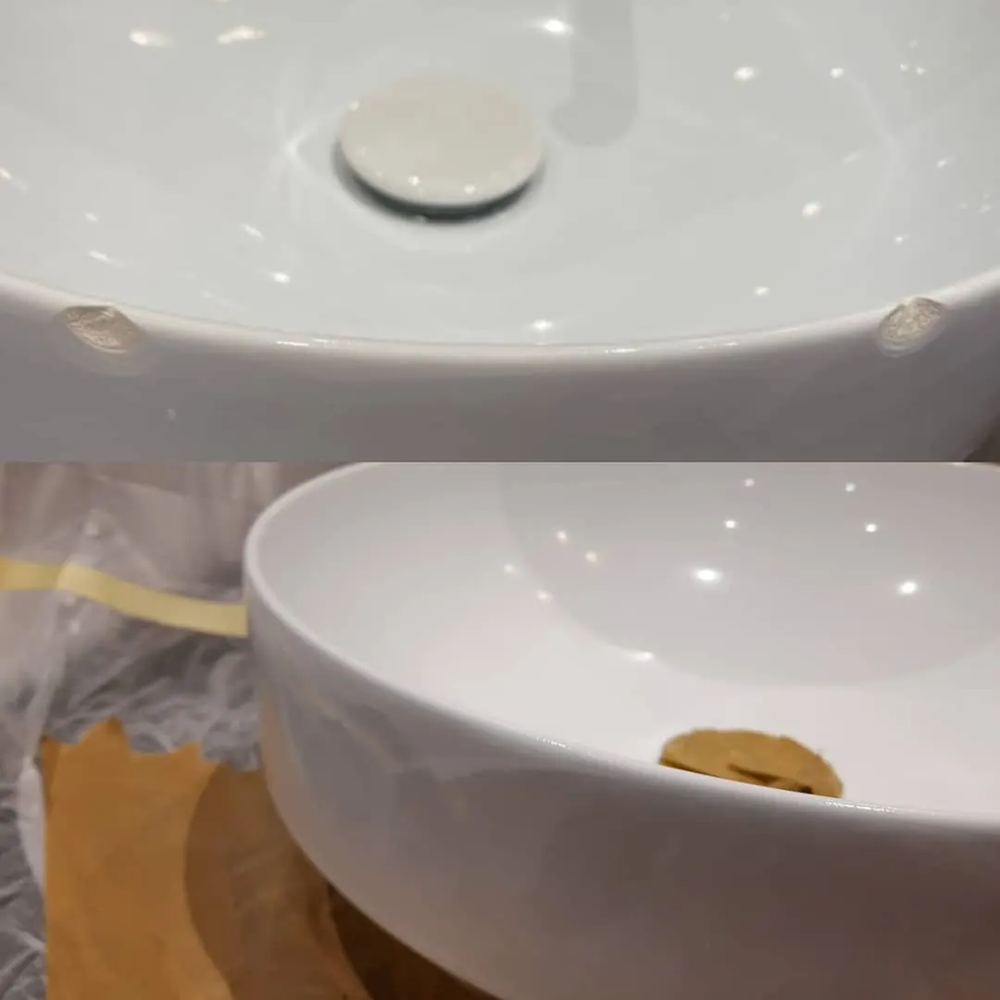
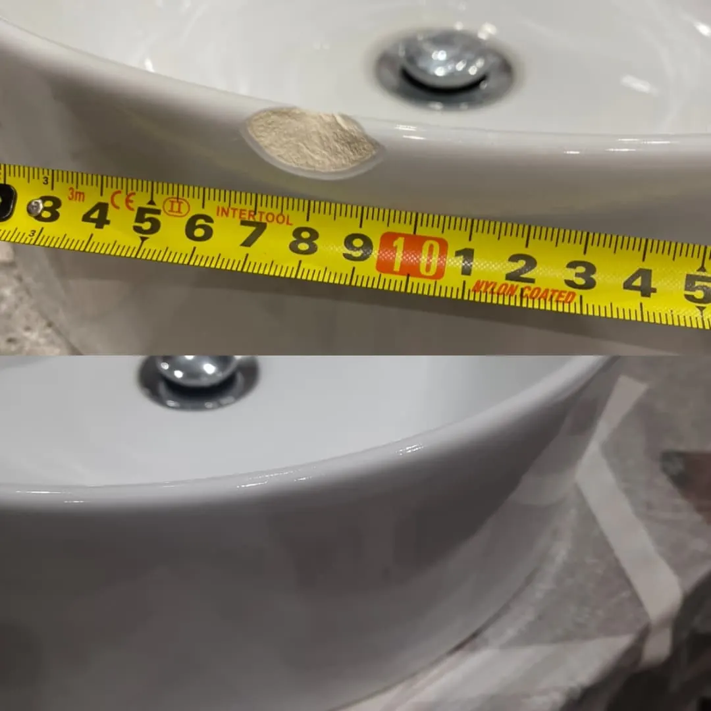

Товар занимает склад
Поврежденные изделия остаются в оборотной зоне, но не приносят выручку.
Санкт-Петербург • партии и единичные изделия
Восстанавливаем поврежденную сантехническую керамику и помогаем монетизировать изделия, которые обычно списываются.
Скрытые потери
После замены клиенту поврежденная единица остается на складе. Деньги в товаре заморожены, место занято, а стандартный путь через утилизацию или глубокий дисконт снижает маржинальность.
Поврежденные изделия остаются в оборотной зоне, но не приносят выручку.
Списанная керамика превращается в прямой убыток и операционную нагрузку.
Продажа с большим снижением цены не раскрывает потенциал товара.
Задержки усиливают конфликты и увеличивают нагрузку на сервисные команды.
Решение
Мы принимаем поврежденные изделия, восстанавливаем внешний вид и потребительские свойства, после чего товар можно вернуть в продажу как восстановленный, уцененный или складской. Работы согласуются до старта, а результат фиксируется по каждой единице.
Направления работ
Отдельно описали ключевые виды работ, чтобы до отправки партии было проще понять, подходит ли услуга под вашу задачу.
Как это работает
Вы присылаете фотографии дефектов и перечень изделий в партии.
Мы определяем, какие повреждения рационально восстанавливать.
Партия отправляется в мастерскую и принимается по акту.
Проводим работы, фиксируем результат и готовим отчет по каждой единице.
Вы забираете товар и принимаете решение о формате дальнейшей продажи.
Реальные примеры
Фото показывают типовые косметические дефекты и результат после восстановления: сколы кромки, повреждения глазури и следы транспортировки.
Экономика
Стоимость восстановления ориентировочно составляет 10% от розничной цены изделия. Вместо полного списания появляется возможность дополнительной выручки от продажи восстановленного, уцененного или складского товара.
Изделие с розничной ценой
100 000 ₽Преимущества
Поврежденное изделие не уходит сразу в списание: после оценки и восстановления его можно вернуть в продажу как восстановленный, уцененный или складской товар.
Рекламационные позиции не занимают полезную площадь месяцами. Освобождаются складские мощности для нового товара, а арендная площадь используется эффективнее.
Понятный процесс обработки дефектных изделий снижает количество спорных решений, повторных обращений и ручной нагрузки на сервисную команду.
Работаем с косметическими повреждениями, которые не затрагивают безопасность эксплуатации: сколы, потертости, дефекты глазури и следы транспортировки.
По изделию фиксируются состояние до работ, выполненные действия и результат. Заказчик понимает, что сделано с каждой позицией партии.
Работа по безналичному расчету, приемка и возврат по актам, закрывающие документы. Это удобно для B2B-клиентов и внутренних проверок.


Контроль
Вопросы
Короткие ответы для отделов рекламаций, складов и компаний, которые хотят понять, можно ли вернуть поврежденную сантехническую керамику в продажу.
Восстанавливаем косметические дефекты: сколы кромки, повреждения глазури, потертости и следы транспортировки, если они не затрагивают безопасность эксплуатации изделия.
Да. Услуга ориентирована на B2B-клиентов: отделы рекламаций, склады, дистрибьюторов, сервисные центры и компании, которым нужно вернуть поврежденный товар в коммерческий оборот.
Работы выполняются в Санкт-Петербурге. Партия передается в мастерскую, принимается по акту, после восстановления возвращается заказчику с фиксацией результата.
Отправьте фотографии дефектов, количество изделий и описание партии на das05@list.ru или свяжитесь по телефону 8 965 767-29-66.
Старт с пилотной партии
Пришлите фото повреждений и количество изделий — мы оценим, что можно вернуть в коммерческий оборот.